Quem somos
Um sonho italiano na Zona Norte
Massas frescas, pizzas de forno, pratos para dividir e uma carta de vinhos pensada para acompanhar, na Água Fria.

Nossa história
Uma casa de irmãos
A Elea Forneria nasceu na Água Fria do desejo de compartilhar a paixão pela cozinha italiana: massas frescas, pizzas de forno, pratos para dividir e uma carta de vinhos pensada para acompanhar.
À frente da casa estão os irmãos e sócios Enrico Villela, chef da cozinha, e Manuela Fernandes, sommelière. No primeiro aniversário, a Elea recebeu chefs convidados do Borgo Mooca e do Bar Moela. Em 2025 e em 2026, foi eleita a melhor trattoria de São Paulo pela Veja SP Comer & Beber.
Quem faz
As pessoas por trás da Elea
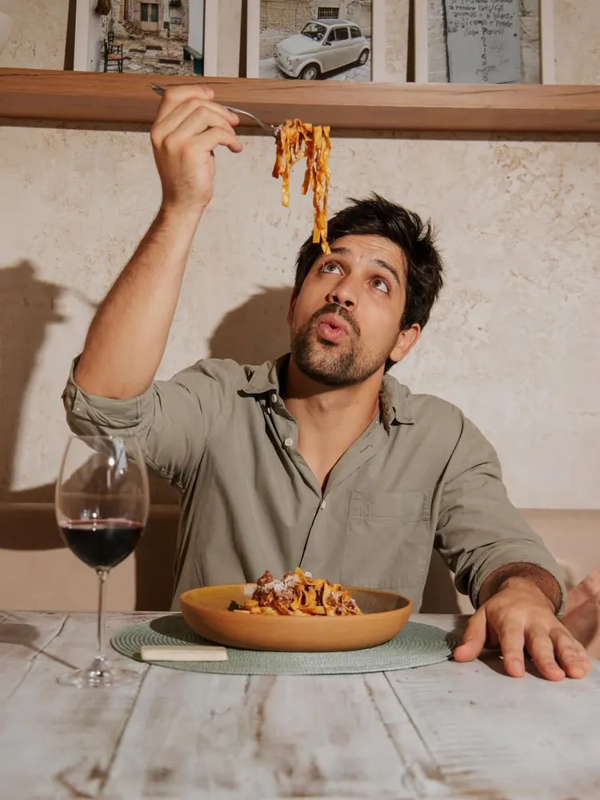
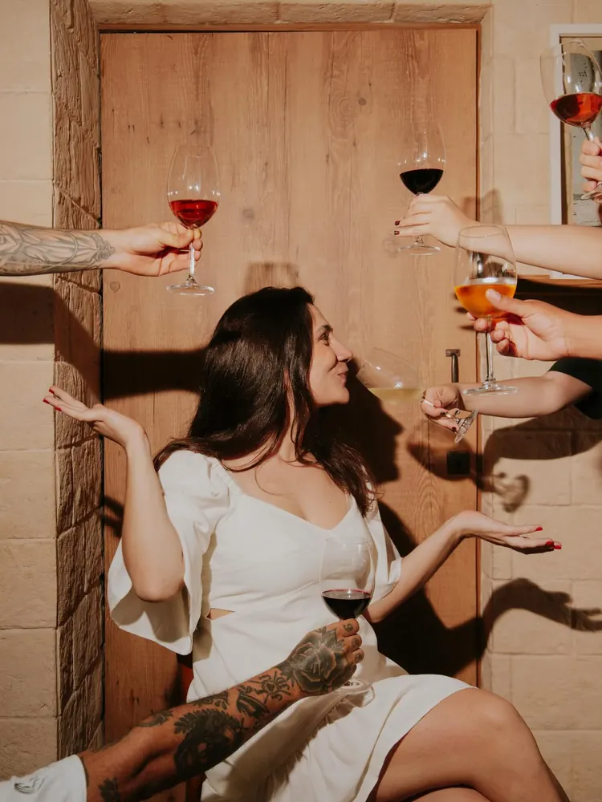


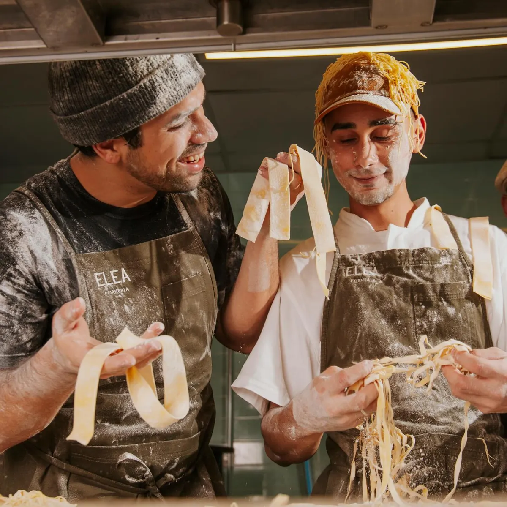
Momentos
Mesa cheia, conversa longa
Pratos no centro da mesa, taças cheias e encontros sem pressa.
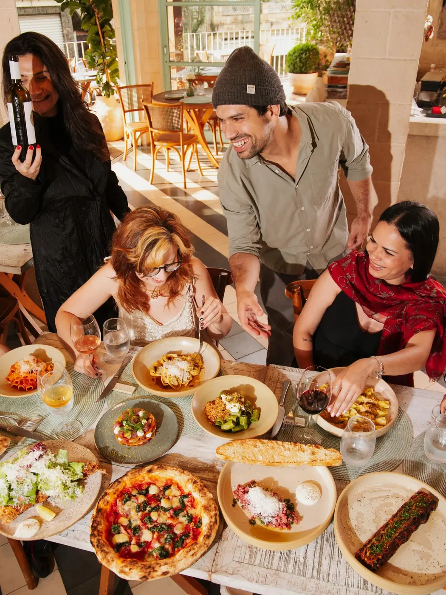
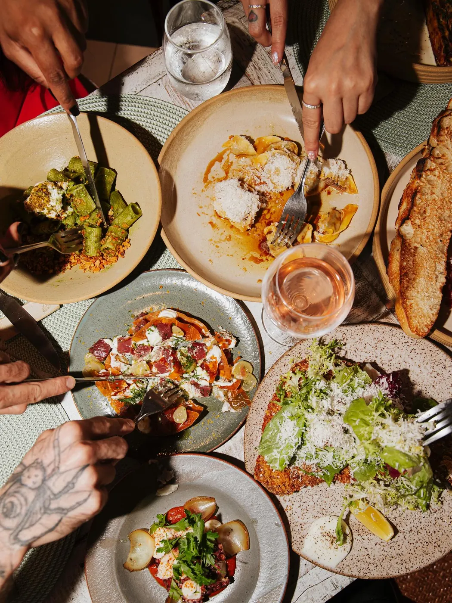
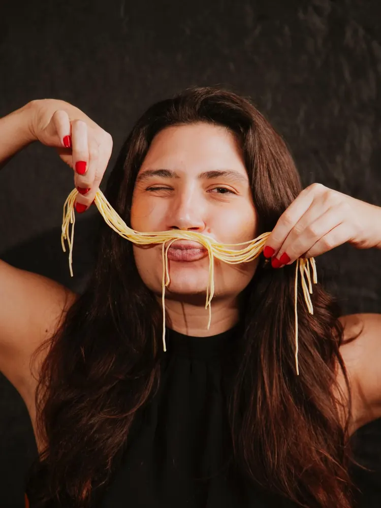
Madeira, plantas e mesa longa
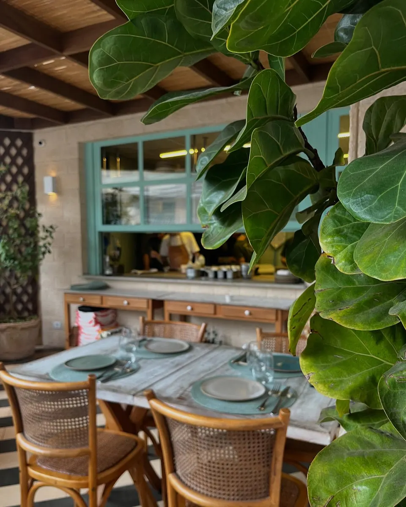
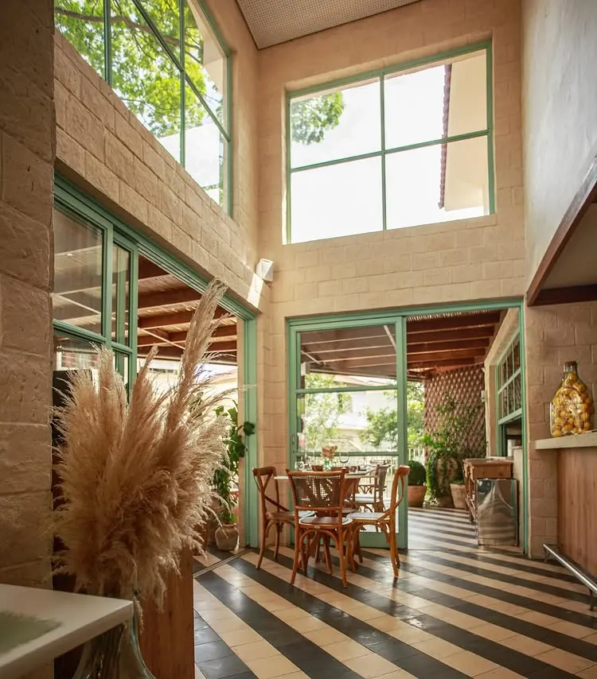
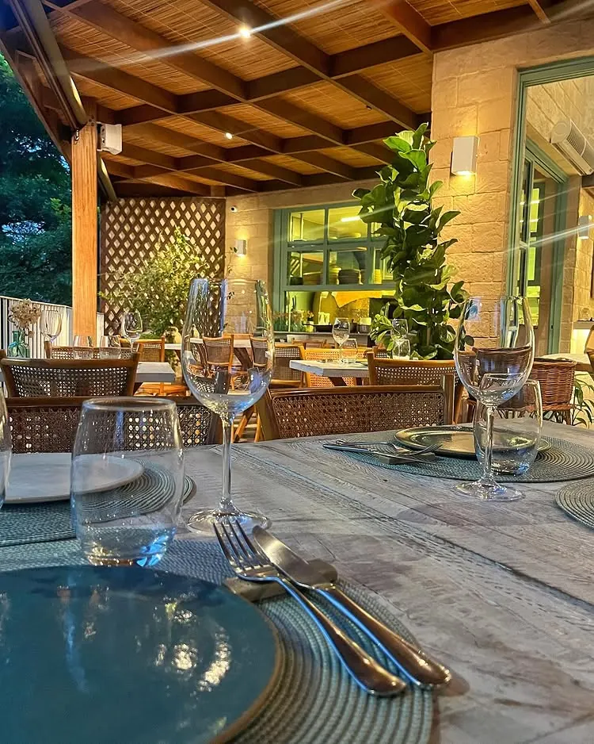
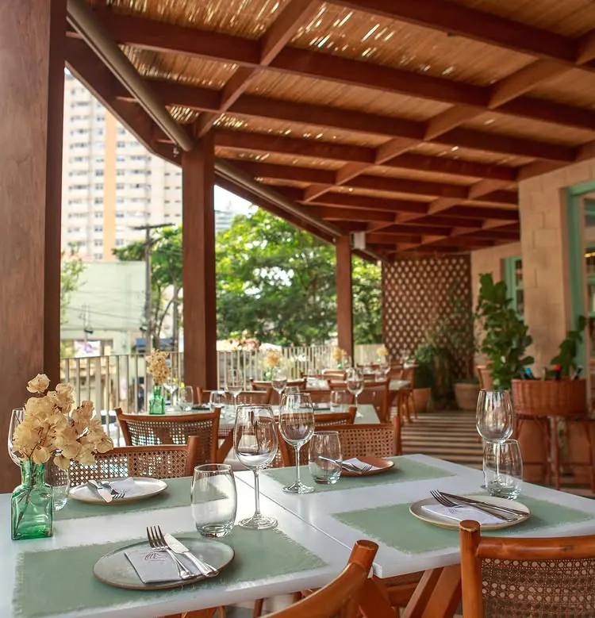
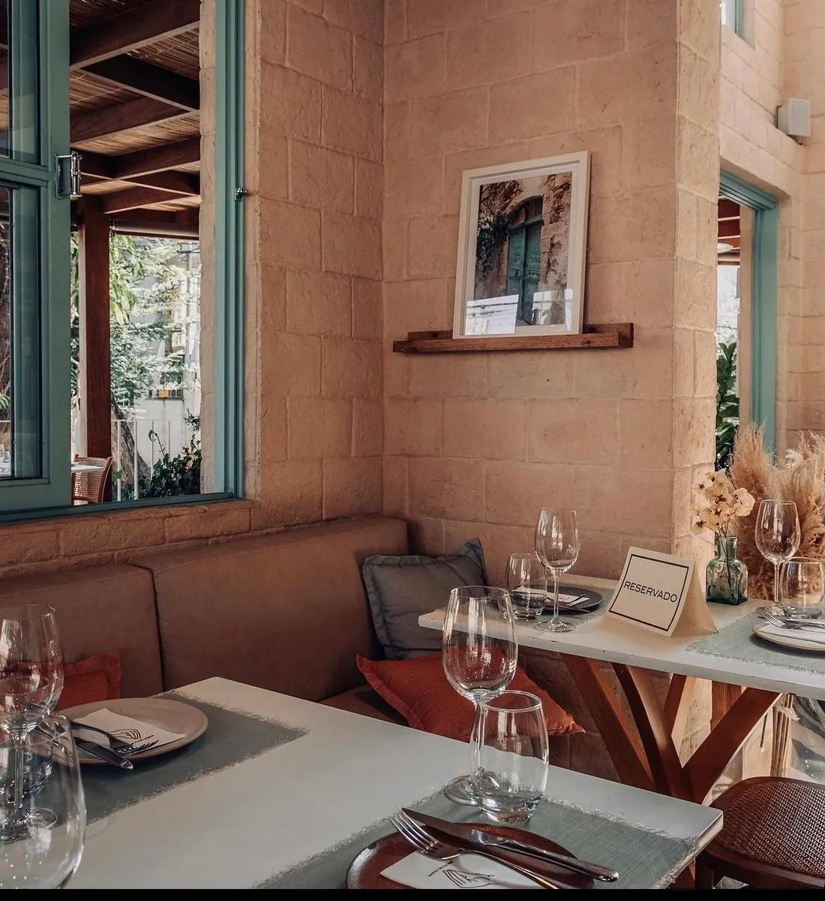
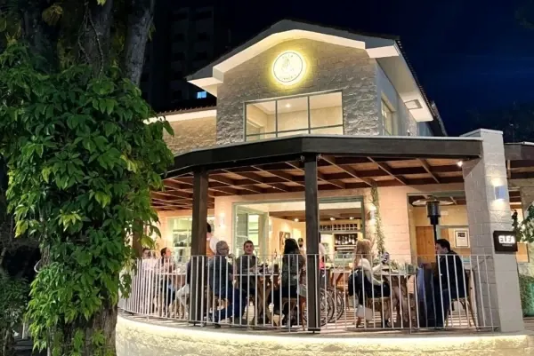